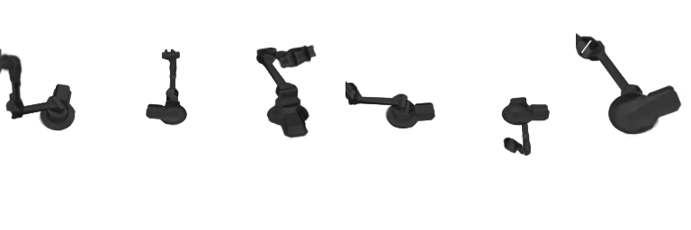
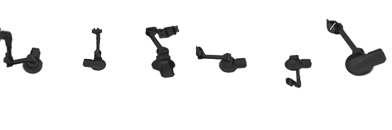

Method Overview
We begin with an initial 3D point set to initialize our canonical Gaussian field. After projecting and rasterizing these Gaussians, we apply photometric, depth‐distortion, and normal‐consistency losses to secure geometry. Next, a pose‐conditioned LBS network deforms the Gaussians based on joint angles and we fine‐tune both the Gaussian parameters and deformation network using RGB supervision. Finally, coarse renders and skeleton maps drive a single‐step diffusion refinement, injecting fine textures and highlights for the final high‐fidelity output.
Canonical Reconstruction
Dense RGB, depth, and normal supervision sculpt a geometry-aware Gaussian field that preserves fine structural details.
Pose-Conditioned Rendering
A deformation network conditioned on joint angles ensures consistent appearance and geometry across articulation states.
Diffusion Refinement
Single-step diffusion injects high-frequency textures while respecting skeletal constraints for realistic final renders.
Reliable Generalization
Our two-stage training pipeline delivers robust performance for novel viewpoints and poses across diverse robot morphologies.
Results Overview

GRADRobot (bottom) vs. DrRobot (top) showing finer detail and higher PSNR.

Error-colored point clouds highlighting tighter geometry.
 
